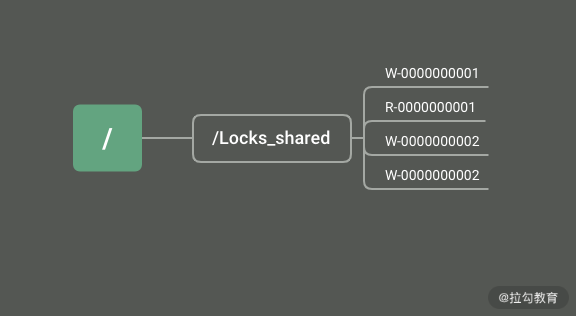
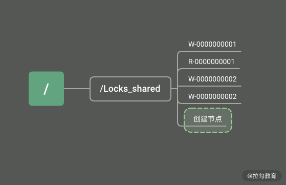
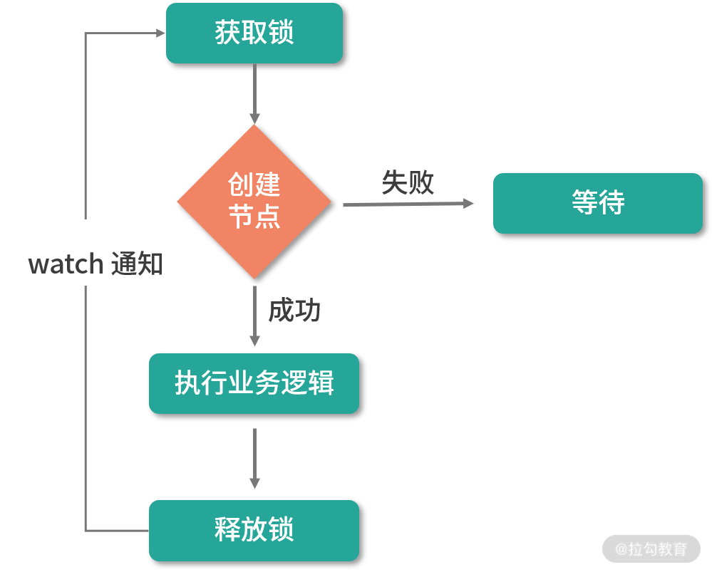

- 00 开篇词：选择 ZooKeeper，一步到位掌握分布式开发.md
- 01 ZooKeeper 数据模型：节点的特性与应用.md
- 02 发布订阅模式：如何使用 Watch 机制实现分布式通知.md
- 03 ACL 权限控制：如何避免未经授权的访问？.md
- 04 ZooKeeper 如何进行序列化？.md
- 05 深入分析 Jute 的底层实现原理.md
- 06 ZooKeeper 的网络通信协议详解.md
- 07 单机模式：服务器如何从初始化到对外提供服务？.md
- 08 集群模式：服务器如何从初始化到对外提供服务？.md
- 09 创建会话：避开日常开发的那些“坑”.md
- 10 ClientCnxn：客户端核心工作类工作原理解析.md
- 11 分桶策略：如何实现高效的会话管理？.md
- 12 服务端是如何处理一次会话请求的？.md
- 13 Curator：如何降低 ZooKeeper 使用的复杂性？.md
- 14 Leader 选举：如何保证分布式数据的一致性？.md
- 15 ZooKeeper 究竟是怎么选中 Leader 的？.md
- 16 ZooKeeper 集群中 Leader 与 Follower 的数据同步策略.md
- 17 集群中 Leader 的作用：事务的请求处理与调度分析.md
- 18 集群中 Follow 的作用：非事务请求的处理与 Leader 的选举分析.md
- 19 Observer 的作用与 Follow 有哪些不同？.md
- 20 一个运行中的 ZooKeeper 服务会产生哪些数据和文件？.md
- 21 ZooKeeper 分布式锁：实现和原理解析.md
- 22 基于 ZooKeeper 命名服务的应用：分布式 ID 生成器.md
- 23 使用 ZooKeeper 实现负载均衡服务器功能.md
- 24 ZooKeeper 在 Kafka 和 Dubbo 中的工业级实现案例分析.md
- 25 如何搭建一个高可用的 ZooKeeper 生产环境？.md
- 26 JConsole 与四字母命令：如何监控服务器上 ZooKeeper 的运行状态？.md
- 27 crontab 与 PurgeTxnLog：线上系统日志清理的最佳时间和方式.md
- 28 彻底掌握二阶段提交三阶段提交算法原理.md
- 29 ZAB 协议算法：崩溃恢复和消息广播.md
- 30 ZAB 与 Paxos 算法的联系与区别.md
- 31 ZooKeeper 中二阶段提交算法的实现分析.md
- 32 ZooKeeper 数据存储底层实现解析.md
- 33 结束语 分布技术发展与 ZooKeeper 应用前景.md
21 ZooKeeper 分布式锁：实现和原理解析
从本课时开始，我们就进入 ZooKeeper 专栏课程的实战篇。在实战篇中，我们主要介绍在实际生成环境中应该如何使用和设计 ZooKeeper 服务，并给出一些常见的问题以及解决方案。
在基础篇第 2 课时介绍 Watch 监控机制时，我为你介绍了一个利用 ZooKeeper 中的 Watch 机制实现一个简单的分布式锁的例子。这个例子当时是为了说明 Watch 机制的主要特点和作用。但在实际生产开发的过程中，这种分布式锁作
为商业系统分布式锁的解决方案，直接利用之前介绍的实现分布式锁的方式，显然过于简单，且其中也有不少缺陷。那么今天这节课就结合这段时间学习到的知识，开发一个商业级别的分布式锁。
什么是分布式锁
在开始着手开发商业级的分布式锁之前，我们首先要弄清楚什么是分布式锁，以及分布式锁在日常工作的使用场景。明确了这些，我们才能设计出一个安全稳定的分布式锁。
在日常开发中，我们最熟悉也常用的分布式锁场景是在开发多线程的时候。为了协调本地应用上多个线程对某一资源的访问，就要对该资源或数值变量进行加锁，以保证在多线程环境下系统能够正确地运行。在一台服务器上的程序内部，线程可以通过系统进行线程之间的通信，实现加锁等操作。而在分布式环境下，执行事务的线程存在于不同的网络服务器中，要想实现在分布式网络下的线程协同操作，就要用到分布式锁。
分布式死锁
在单机环境下，多线程之间会产生死锁问题。同样，在分布式系统环境下，也会产生分布式死锁的问题。
当死锁发生时，系统资源会一直被某一个线程占用，从而导致其他线程无法访问到该资源，最终使整个系统的业务处理或运行性能受到影响，严重的甚至可能导致服务器无法对外提供服务。
所以当我们在设计开发分布式系统的时候，要准备一些方案来面对可能会出现的死锁问题，当问题发生时，系统会根据我们预先设计的方案，避免死锁对整个系统的影响。常用的解决死锁问题的方法有超时方法和死锁检测。
- 超时方法：在解决死锁问题时，超时方法可能是最简单的处理方式了。超时方式是在创建分布式线程的时候，对每个线程都设置一个超时时间。当该线程的超时时间到期后，无论该线程是否执行完毕，都要关闭该线程并释放该线程所占用的系统资源。之后其他线程就可以访问该线程释放的资源，这样就不会造成分布式死锁问题。但是这种设置超时时间的方法也有很多缺点，最主要的就是很难设置一个合适的超时时间。如果时间设置过短，可能造成线程未执行完相关的处理逻辑，就因为超时时间到期就被迫关闭，最终导致程序执行出错。
- 死锁检测：死锁检测是处理死锁问题的另一种方法，它解决了超时方法的缺陷。与超时方法相比，死锁检测方法主动检测发现线程死锁，在控制死锁问题上更加灵活准确。你可以把死锁检测理解为一个运行在各个服务器系统上的线程或方法，该方法专门用来探索发现应用服务上的线程是否发生了死锁。如果发生死锁，就会触发相应的预设处理方案。
锁的实现
在介绍完分布式锁的基本性质和潜在问题后，接下来我们就通过 ZooKeeper 来实现两种比较常用的分布式锁。
排他锁
排他锁也叫作独占锁，从名字上就可以看出它的实现原理。当我们给某一个数据对象设置了排他锁后，只有具有该锁的事务线程可以访问该条数据对象，直到该条事务主动释放锁。否则，在这期间其他事务不能对该数据对象进行任何操作。在第二课时我们已经学习了利用 ZooKeeper 实现排他锁，这里不再赘述。
共享锁
另一种分布式锁的类型是共享锁。它在性能上要优于排他锁，这是因为在共享锁的实现中，只对数据对象的写操作加锁，而不为对象的读操作进行加锁。这样既保证了数据对象的完整性，也兼顾了多事务情况下的读取操作。可以说，共享锁是写入排他，而读取操作则没有限制。
接下来我就通过 ZooKeeper 来实现一个排他锁。
创建锁
首先，我们通过在 ZooKeeper 服务器上创建数据节点的方式来创建一个共享锁。其实无论是共享锁还是排他锁，在锁的实现方式上都是一样的。唯一的区别在于，共享锁为一个数据事务创建两个数据节点，来区分是写入操作还是读取操作。如下图所示，在 ZooKeeper 数据模型上的 Locks_shared 节点下创建临时顺序节点，临时顺序节点的名称中带有请求的操作类型分别是 R 读取操作、W 写入操作。

获取锁
当某一个事务在访问共享数据时，首先需要获取锁。ZooKeeper 中的所有客户端会在 Locks_shared 节点下创建一个临时顺序节点。根据对数据对象的操作类型创建不同的数据节点，如果是读操作，就创建名称中带有 R 标志的顺序节点，如果是写入操作就创建带有 W 标志的顺序节点。

释放锁
事务逻辑执行完毕后，需要对事物线程占有的共享锁进行释放。我们可以利用 ZooKeeper 中数据节点的性质来实现主动释放锁和被动释放锁两种方式。
主动释放锁是当客户端的逻辑执行完毕，主动调用 delete 函数删除ZooKeeper 服务上的数据节点。而被动释放锁则利用临时节点的性质，在客户端因异常而退出时，ZooKeeper 服务端会直接删除该临时节点，即释放该共享锁。
这种实现方式正好和上面介绍的死锁的两种处理方式相对应。到目前为止，我们就利用 ZooKeeper 实现了一个比较完整的共享锁。如下图所示，在这个实现逻辑中，首先通过创建数据临时数据节点的方式实现获取锁的操作。创建数据节点分为两种，分别是读操作的数据节点和写操作的数据节点。当锁节点删除时，注册了该 Watch 监控的其他客户端也会收到通知，重新发起创建临时节点尝试获取锁。当事务逻辑执行完成，客户端会主动删除该临时节点释放锁。

总结
通过本课时的学习，我们掌握了什么是分布式锁，以及分布式锁在实际生产环境中面临的问题和挑战。无论是单机上的加锁还是分布式环境下的分布式锁，都会出现死锁问题。面对死锁问题，如果我们不能很好地处理，会严重影响系统的运行。在本课时中，我为你讲解了两种处理死锁问题的方法，分别是超时设置和死锁监控。然后重点介绍了利用 ZooKeeper 实现一个共享锁。
在具体实现的过程中，我们利用 ZooKeeper 数据模型的临时顺序节点和 Watch 监控机制，在客户端通过创建数据节点的方式来获取锁，通过删除数据节点来释放锁。
这里我给你留一个问题，作为我们课后的作业：在分布式共享锁的实现中，获得锁的线程执行完释放锁后，其他等待资源的线程客户端收到 Watch 通知机制，会尝试获取锁。但是如果等待线程过多，那么频繁的 Watch 通知也会占用系统的网络资源和内存，有没有什么好的办法可以优化呢？在保证共享锁的实现下，减少 Watch 通知次数，这里留给你在本地进行优化。
© 2019 - 2023 Liangliang Lee. Powered by gin and hexo-theme-book.